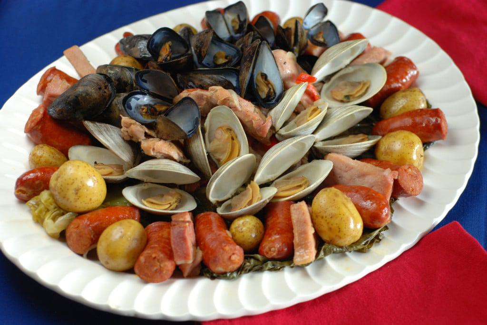

Back to Homepage

Description
This simple feast is a traditional Chilean dish that originates in the island of Chiloe, one of Patagonia's northern most and larger islands. This dish is an assortment of meats and seafood that was traditionally prepared in a hole with hot stones, covered with Chilean "nalca" leaves (a variation of rhubarb). Today, this dish is often prepared in a pot over a stove, or in a paiella disk over a grill. The latter is recommended, but you will need a cover for the disk; if you have any rhubarb leaves, or nalca leaves if you're lucky, those will work too in a pinch. While the dish requires various ingredients, cooking it could not be simpler, and you will be able to serve a small crowd with this amount of food. If using a pot, be certain that it is a large one, you will serve 6-8 people with this recipe.
Ingredients
- 2 tablespoons olive oil
- 1 1/2 punds of chicken legs and thighs (combined)
- 1 red bell pepper, sliced
-
- 1 large valencia onion (white onion works too!)
- 1 Chilean long hot pepper (Italian works too! Or just use your favorite hot pepper.)
- 1 tablespoon of garlic minced
- 1 pound of mini Yukon Gold potatoes (any small fingerling potato works)
- 10 oz of your favorite smoked sausage or chorizo
- 1 pound of smoked pork ribs or pork chops (ribs are better!)
- 2 pounds of clams
- 1 pound of mussels
- 1 1/2 cups of white wine (the cheaper the better!)
Steps - This is for a pot over a grill, but can be substituted for a disk or pot over a stove.
- Heat oil in a large grill-proof wide pot over high heat on the barbecue.
- Add chicken and cook until lightly brown.
- Add potatoes, red peppers, onions, banana peppers and half of garlic, season with salt and pepper and cook for a few minutes or until softened.
- Add sausage and spare ribs. Cover and cook for 7 minutes.
- Add clams, mussels and remaining garlic, pour wine over top and cover.
- Keep barbecue heat at about 325 F and cook for about 40 minutes or until everything is cooked and steaming hot.
- Remove pot from barbecue and put all the ingredients clams, mussels, sausage, chicken and pork on a platter.
- Enjoy with friends and some Chilean wine!
Return to top